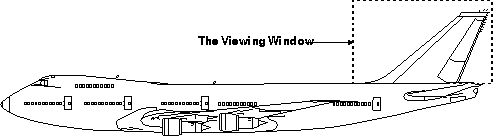

The viewing window defines a rectangular clipping boundary in model space. It is defined with GpiSetViewingLimits. As input to this function, you supply the model coordinates of the lower-left and upper-right corners of the viewing window.
When a drawing primitive, such as a line, intersects a viewing window, any part of that line outside of the viewing window is clipped. Any point on the boundary of the viewing window is considered within the window, and is not clipped. By default, the viewing window performs no clipping. In this case, all graphics output in the model space is transformed. The following figure shows how the viewing window outlines a part of model space. The Viewing Window
This example shows how a presentation page is constructed. The viewing window outlines the tail of the aircraft, which is scaled and translated when drawn in presentation-page space. The rest of the aircraft is clipped away during the drawing process.